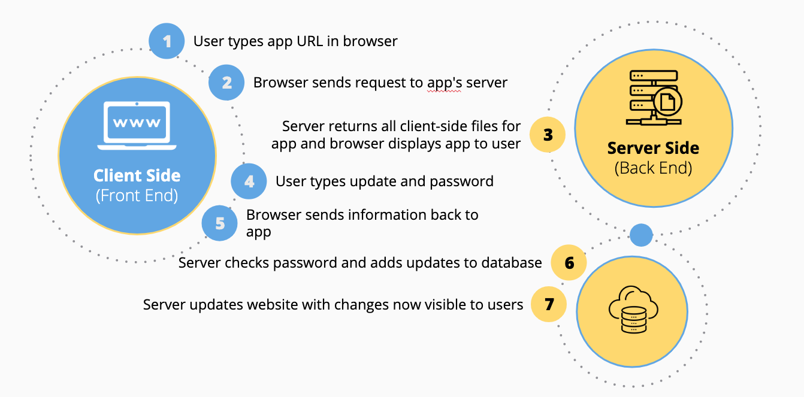

Internet
What is the Internet?
The Internet is the backbone of the Web, the technical infrastructure that makes the Web possible. At its most basic, the Internet is a large network of computers which communicate all together.
How do we stay connected with the Internet?
The Internet consists of this whole infrastructure of networks.
A simple network
When two computers need to communicate, you have to link them, either physically (usually with an Ethernet cable) or wirelessly (for example with WiFi or Bluetooth systems). You can connect as many computers as you wish. But it gets complicated quickly.
To solve this problem, each computer on a network is connected to a special tiny computer called a router. This router has only one job: like a signaler at a railway station, it makes sure that a message sent from a given computer arrives at the right destination computer.

A network of networks
So far so good. But what about connecting hundreds, thousands, billions of computers? Of course a single router can't scale that far, but, if you read carefully, we said that a router is a computer like any other, so what keeps us from connecting two routers together? Nothing, so let's do that. By connecting computers to routers, then routers to routers, we are able to scale infinitely.
Now that works for inside your home but we want to connect outside our home. We can accomplish this by connecting our network to the telephone infrastructure, we need a special piece of equipment called a modem. This modem turns the information from our network into information manageable by the telephone infrastructure and vice versa.

So we are connected to the telephone infrastructure. The next step is to send the messages from our network to the network we want to reach. To do that, we will connect our network to an Internet Service Provider (ISP). An ISP is a company that manages some special routers that are all linked together and can also access other ISPs' routers. So the message from our network is carried through the network of ISP networks to the destination network. The Internet consists of this whole infrastructure of networks.
VIDEO: The Internet: Wires, Cables & Wifi
Finding computers
If you want to send a message to a computer, you have to specify which one. Thus any computer linked to a network has a unique address that identifies it, called an "IP address" (where IP stands for Internet Protocol). It's an address made of a series of four numbers separated by dots, for example: 192.168.2.10.
That's perfectly fine for computers, but we human beings have a hard time remembering that sort of address. To make things easier, we can alias an IP address with a human readable name called a domain name. For example, google.com is the domain name used on top of the IP address 173.194.121.32. So using the domain name is the easiest way for us to reach a computer over the Internet.

VIDEO: The Internet: IP Addresses & DNS
Packets explained
Earlier we used the term "packets" to describe the format in which the data is sent from server to client. What do we mean here? Basically, when data is sent across the web, it is sent as thousands of small chunks, so that many different web users can download the same website at the same time. If websites were sent as single big chunks, only one user could download one at a time, which obviously would make the web very inefficient and not much fun to use.
VIDEO: The Internet: Packets, Routing & Reliability
How the Internet Works

VIDEO: The Internet: HTTP & HTML
Extras
- The Internet: Encryption & Public Keys
- The Internet: Cybersecurity & Crime
- The Internet: How Search Works